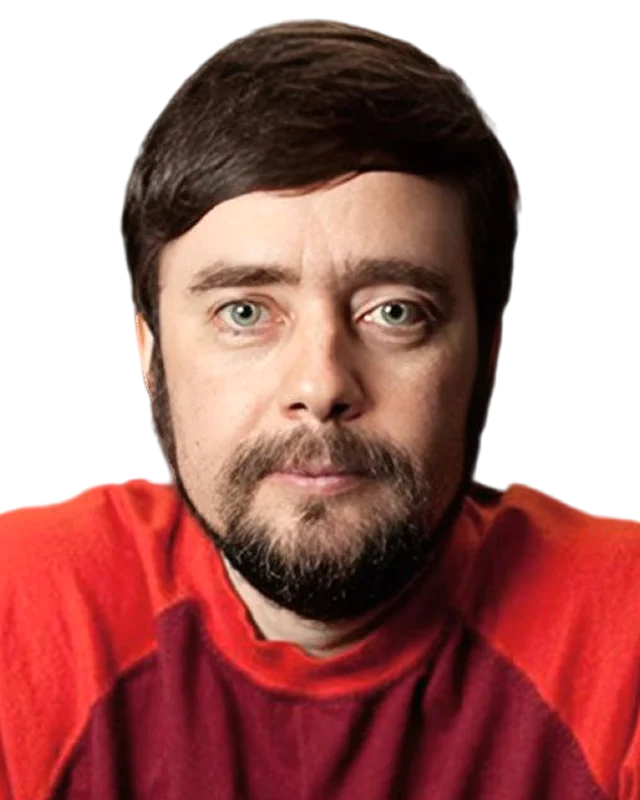

The Team
The team behind
HelioFlux.

Canada Research Chair · Tissue Biophysics
40+ peer-reviewed publications
Harvard Wyss Fellow · Allen Discovery Center Postdoctoral Researcher
Dr. Nirosha Murugan
Interim CEO, Chief Scientist & Co-Founder
Dr. Nirosha J. Murugan is Canada Research Chair in Tissue Biophysics at Wilfrid Laurier University and the scientific co-founder of HelioFlux. Her lab has secured $1.6M in non-dilutive grants and produced 40+ peer-reviewed publications across cancer biology, regenerative medicine, neuroscience, and quantum biology.
She earned her Ph.D. in Biomolecular Sciences at Laurentian University, where she pioneered the quantum-sensor-based cancer detection technology now commercialized through HelioFlux. As a postdoctoral researcher in Dr. Michael Levin's lab at the Allen Discovery Center at Tufts University, she advanced ion-channel bioelectricity as a mechanism of tissue patterning and co-developed a drug delivery system to induce limb regeneration in non-regenerative species.
A dedicated mentor, Dr. Murugan is deeply committed to making biophysics accessible to the next generation of health innovators.
Awards & Recognition
- Optica Foundation Challenge Grant2023
- Faculty of Science Tier 2 Distinguished Research Chair2023
- Tier 2 Canada Research Chair, Tissue Biophysics2022
- Minister of Colleges and Universities Award of Excellence2022
- STRIVE Young Professional Visionary Award2022
- NSERC Science Exposed Jury Prize Winner2021
Leadership
-
Kelly Lucas
President & Co-Founder
Kelly co-founded HelioFlux to bring Nirosha's biophotonic research out of the lab and into clinical practice. She leads fundraising, strategy, and commercial partnerships, growing the company from a research concept to a funded startup with a patent-pending platform and a first human study on the horizon. Before HelioFlux, Kelly studied biology at UNC Chapel Hill and earned an MBA from Indiana University's Kelley School of Business. She's driven by one belief: nobody should die from a cancer caught too late.
-
Jim Armstrong
Interim CFO
Multiple Forbes Midas List honoree. Pre-launch investor in PayPal, NetZero, and CarsDirect. Founding Partner of March Capital Partners, Managing Director of Clearstone Venture Partners and Composite Ventures. Oversees HelioFlux's financial strategy and capital allocation, milestone execution, and investor relationships.
-
Glenn Lucas
Chief Strategy Officer
President of Lucas Telepictures, CSO at Escape AI Media. Executive Produced Extract (Miramax, dir. Mike Judge) as Head of Business Development at Ternion Pictures. Strategic Advisor at Composite Ventures. Leads commercial strategy and media partnerships at HelioFlux.
Advisors
-

Dr. Michael Levin
Scientific Advisor
Vannevar Bush Distinguished Professor at Tufts University. Director of the Allen Discovery Center and the Tufts Center for Regenerative and Developmental Biology. Pioneer in bioelectric control of cell behavior. Dr. Murugan's postdoctoral mentor and the scientific foundation HelioFlux is built on.
-
Dr. David Kaplan
Scientific Advisor
Stern Family Endowed Professor of Biomedical Engineering at Tufts University. Director of the Tufts Center for Cellular Agriculture. AIMBE Fellow. Collaborated directly with Dr. Murugan on bioengineered tissue systems during her Tufts postdoctoral work.
-
Justin Horn
Business Advisor
CEO and Founder of Redgate Partners, an Omaha-based advisory firm supporting healthcare and technology companies. 20+ years across strategic sales, benefits, executive leadership, and capital advisory, with prior roles at Virgin Pulse, Holmes Murphy, Diversified Benefits Group, and Neul Capital. Advises HelioFlux on capital strategy, investor relationships, and commercialization partnerships.
Get in touch
We're raising our next round and looking for mission-driven partners.